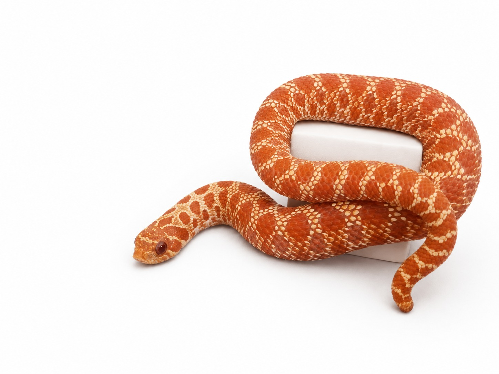

Especie: Western Hognose
Sexo: Hembra
Morph: Albina, Super Red Peperoni
Año: 2025
Peso: 20 g
Origen: CODE
Estado: Juvenil
Super Red (poligénico) y Peperoni (line breeding), línea de selección de color de alta gama que resalta los pigmentos más intensos de la especie.
Homocigoto recesivo para albinismo.
Forma parte del Archivo Genético CODE como registro documental permanente.